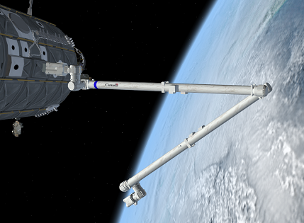
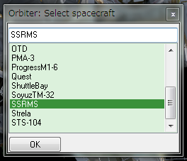
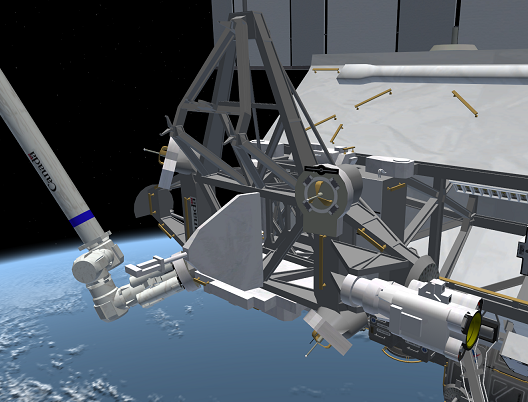

ISS v3.2 カナダアーム2とMBSの操作
ISS v3.2では、カナダアーム2(SSRMS)を使ったISSの組み立てミッションも体験できます。

SSRMSの操作
機能としてはスペースシャトルのRMSと違いはないのですが、操作方法がまったく違うので注意してください。
F3キーを押して、SSRMSを選択してOKをクリック。

| 1 - 7 | アームの関節をそれぞれ操作する |
| S | 関節の回転の向きを変える |
| Q | ペイロードの取り付け／切り離し （F3キーでSSRMSを選択してから操作する） |
| M | ISSからSSRMSを遠隔操作する |
| SHIFT+S | ISSからの遠隔操作モードで、関節の回転の向きを変える |
ISS v3.2に付属しているこのカナダアームですが、実は非常に操作しづらいので、Canadarm2というMODの導入をおすすめします。
MBSの操作
MBS(Mobile Base System)は、ISSのトラスに設置された移動可能な台車です。
カナダアーム2を接続したまま、トラスの上を自由に移動できます。

F3キーでISSを選択。
Nキーを押してMBSを有効にして、矢印キー←→で移動させる。
移動途中でもう一度Nを押すと、その場で停止する。
F3を押してISSではなくMBSを選択した場合、移動させることはできません。
| N | MBSを有効／無効にする（ISSから） |
| ← / → | MBSを左右に移動させる（ISSから） |
| ← / → | エフェクタ（MBSに付属している小さなアーム）を動かす（MBSから） |
| CTRL+A | Attachment managerを起動する（MBSから） |
| D | Attachment point（Attachment managerで選べる取り付け位置）を選択（MBSから） |
| Q | 取り付け／切り離し（MBSから） |
| HOME | 取り付け可能なポイント（赤や青の矢印）を表示する（MBSから） |
| C | カメラ位置を選択（MBSから） |